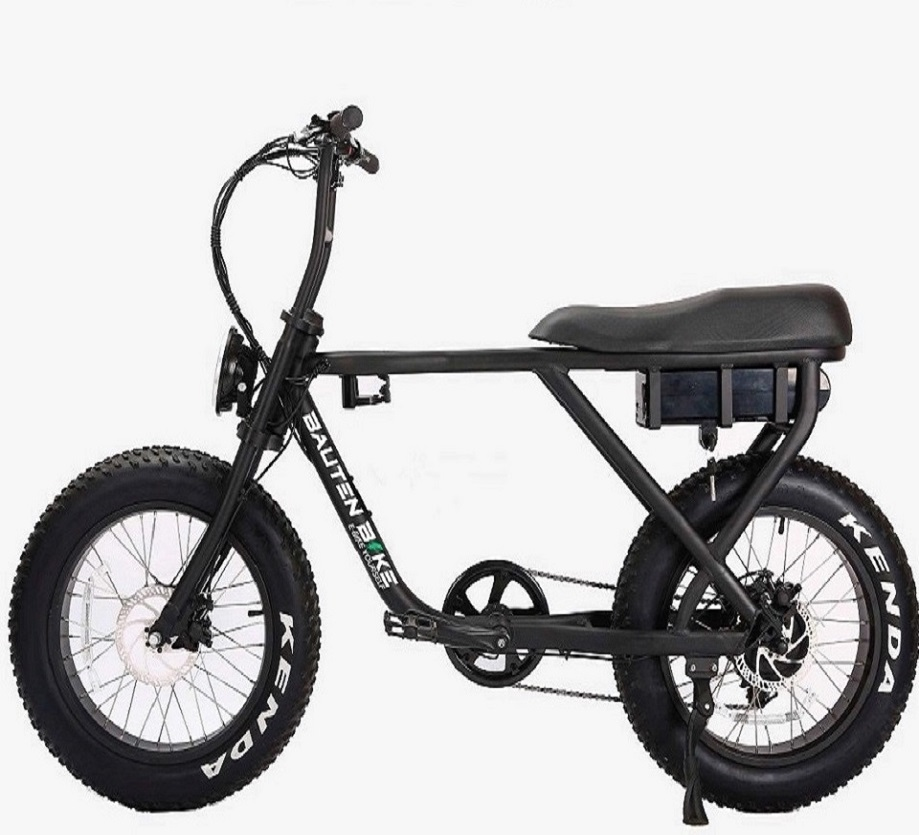
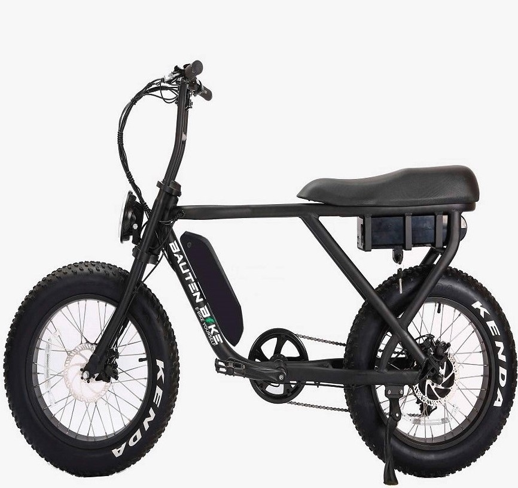
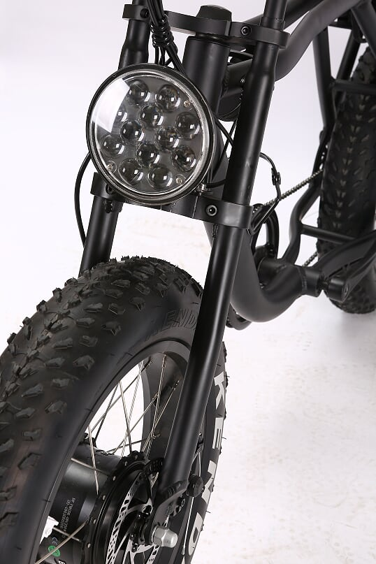
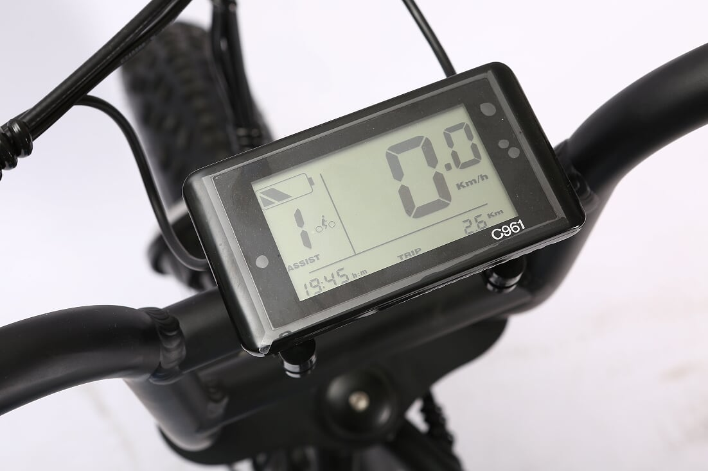
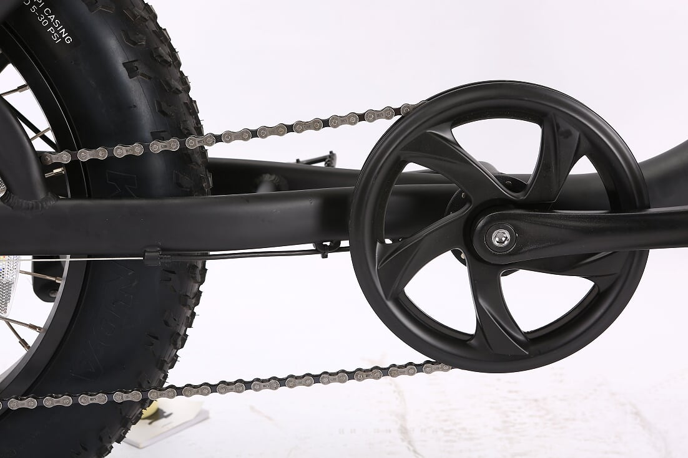
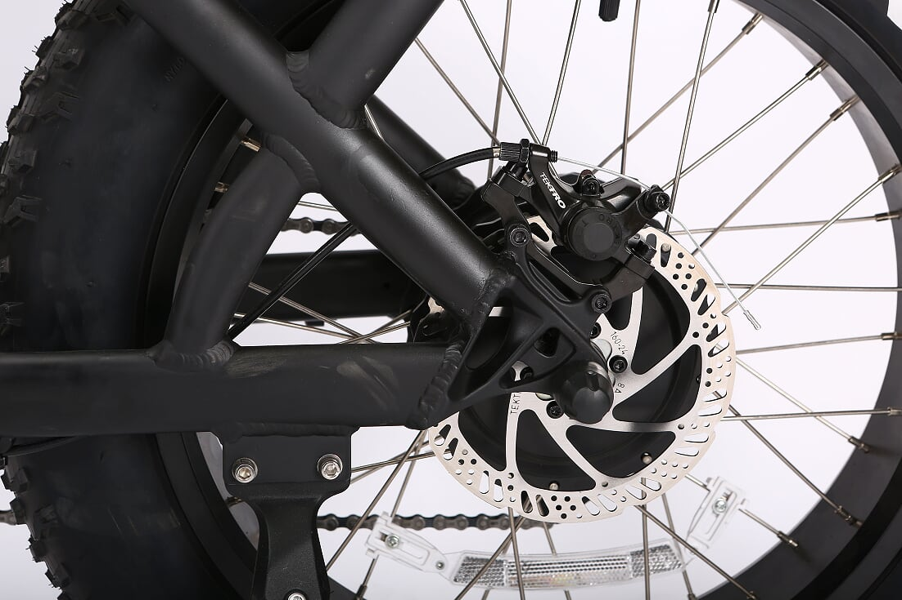
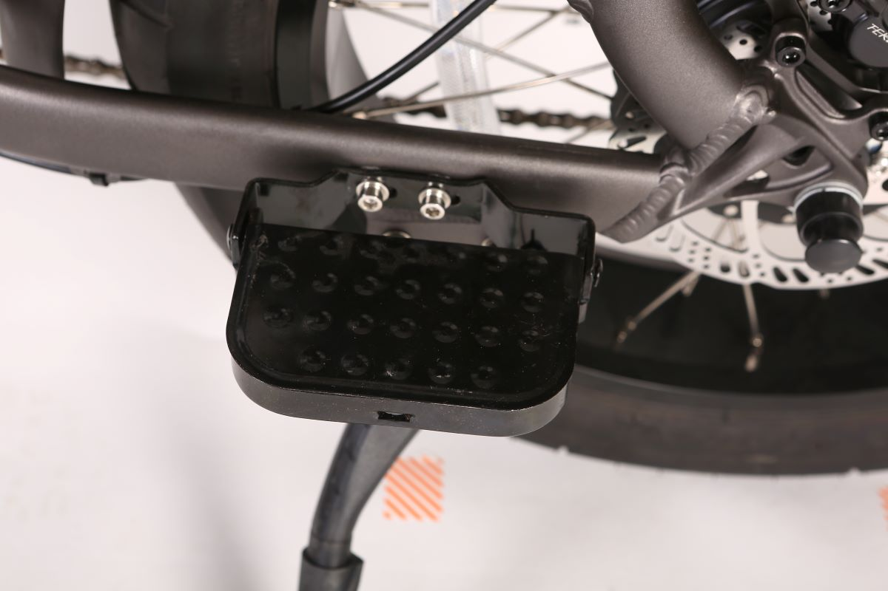

Catálogo
Modelo BB73
- Motor trasero BAFANG de 500w brushess.
- Batería SAMSUNG de litio 48V 13AH extraible con cargador portatil.
- Tiempo de carga de batería 4-6 horas y 800 ciclos.
- Controlador sine wave 48V 18A integrado.
- Display lcd que informa en su pantalla: velocidad, hora, bateria, nivel de PAS, km recorridos. Modelo C961.
- Acelerador de puño hasta 30 KM/H. Movimiento sin pedaleo.
- Sistema de asistente de pedaleo intelectual en 5 niveles (PAS). Esto significa que usará el motor para asistir al usuario mientras pedalea, reduciendo así al mínimo el esfuerzo que este debe realizar.
- Autonomía 40 km por acelerador y 70 km por asistencia de pedaleo aprox.
- Capacidad de carga 150 kg.
- Marco de Aluminio color negro mate.
- Cambios SHIMANO 7 velocidades.
- Frenos de disco delanteros y traseros TEKRO.
- Luz led adelante y atras.
- Neumáticos Kenda fat bike de 20" con cámara.
- Medidas: 155 cm de largo x 115 cm de alto aprox (manubrio regulable).


Modelo BB273
- Motor trasero BAFANG de 500w brushess.
- Batería SAMSUNG de litio 48V 13AH y 10.4AH extraible con cargador portatil.
- Tiempo de carga de batería 4-6 horas y 800 ciclos.
- Controlador sine wave 48V 18A integrado.
- Display lcd que informa en su pantalla: velocidad, hora, bateria, nivel de PAS, km recorridos. Modelo C961.
- Acelerador de puño hasta 30 KM/H. Movimiento sin pedaleo.
- Sistema de asistente de pedaleo intelectual en 5 niveles (PAS). Esto significa que usará el motor para asistir al usuario mientras pedalea, reduciendo así al mínimo el esfuerzo que este debe realizar.
- Autonomía 70 km por acelerador y 90 km por asistencia de pedaleo aprox.
- Capacidad de carga 150 kg.
- Marco de Aluminio color negro mate.
- Cambios SHIMANO 7 velocidades.
- Frenos de disco delanteros y traseros TEKRO.
- Luz led adelante y atras.
- Neumáticos Kenda fat bike de 20" con cámara.
- Medidas: 155 cm de largo x 115 cm de alto aprox (manubrio regulable).
Los detalles son importantes





ESPECIFICACIONES TÉCNICAS
Podes verlas o descargarlas haciendo clic en el ícono
Recordá no imprimir a menos que sea necesario, el cuidado del medio ambiente es tarea de todos